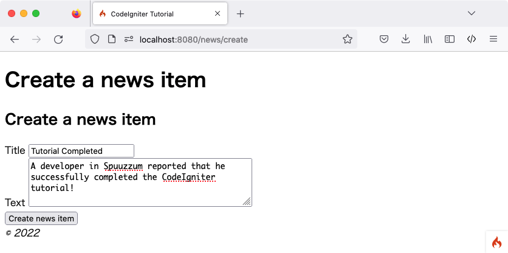
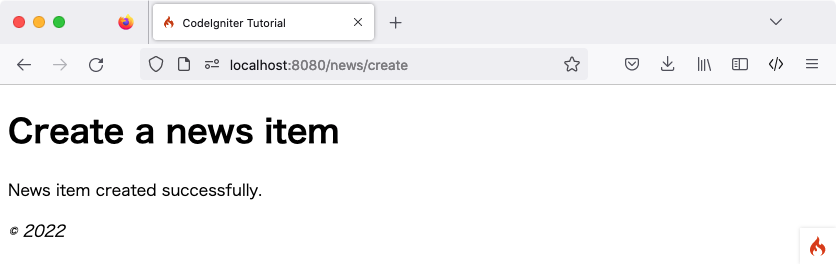

创建新闻条目
目前已掌握如何使用 CodeIgniter 从数据库读取数据，但尚未尝试写入。本节将扩展此前创建的新闻控制器和模型，以实现此功能。
启用 CSRF 过滤器
在创建表单前，先启用 CSRF 保护。
打开 app/Config/Filters.php 文件，按如下方式更新 $methods 属性：
<?php
namespace Config;
use CodeIgniter\Config\BaseConfig;
class Filters extends BaseConfig
{
// ...
public array $methods = [
'POST' => ['csrf'],
];
// ...
}
此配置为所有 POST 请求启用了 CSRF 过滤器。更多关于 CSRF 保护的信息，请参阅 Security 类文档。
添加路由规则
向 CodeIgniter 应用添加新闻条目前，必须在 app/Config/Routes.php 文件中增加一条规则。确保文件中包含以下内容：
<?php
// ...
use App\Controllers\News;
use App\Controllers\Pages;
$routes->get('news', [News::class, 'index']);
$routes->get('news/new', [News::class, 'new']); // Add this line
$routes->post('news', [News::class, 'create']); // Add this line
$routes->get('news/(:segment)', [News::class, 'show']);
$routes->get('pages', [Pages::class, 'index']);
$routes->get('(:segment)', [Pages::class, 'view']);
'news/new' 的路由指令需放在 'news/(:segment)' 之前，以确保能正确显示创建新闻的表单。
$routes->post() 行定义了 POST 请求的路由。该路由仅匹配指向 /news 的 POST 请求，并将其映射到 News 类的 create() 方法。
关于不同路由类型的更多信息，请参阅 设置路由规则。
创建表单
创建 news/create 视图文件
若要向数据库输入数据，需要创建一个用于输入信息的表单。这意味着需要一个包含两个字段（标题和文本）的表单。Slug 将根据模型中的标题自动生成。
在 app/Views/news/create.php 创建新视图：
<h2><?= esc($title) ?></h2>
<?= session()->getFlashdata('error') ?>
<?= validation_list_errors() ?>
<form action="/news" method="post">
<?= csrf_field() ?>
<label for="title">Title</label>
<input type="input" name="title" value="<?= set_value('title') ?>">
<br>
<label for="body">Text</label>
<textarea name="body" cols="45" rows="4"><?= set_value('body') ?></textarea>
<br>
<input type="submit" name="submit" value="Create news item">
</form>
此处可能只有四处内容较为陌生：
使用 session() 函数获取 Session 对象，并通过 session()->getFlashdata('error') 向用户显示 CSRF 保护相关的错误。不过默认情况下，若 CSRF 验证失败会抛出异常，因此该功能目前尚不可用。详见 失败时重定向。
由 表单辅助函数 提供的 validation_list_errors() 函数用于报告表单验证错误。
csrf_field() 函数会创建一个包含 CSRF 令牌的隐藏输入框，有助于抵御常见攻击。
由 表单辅助函数 提供的 set_value() 函数用于在发生错误时显示之前的输入数据。
News 控制器
回到 News 控制器。
添加 News::new() 以显示表单
首先，创建一个方法来显示前面创建的 HTML 表单。
<?php
namespace App\Controllers;
use App\Models\NewsModel;
use CodeIgniter\Exceptions\PageNotFoundException;
class News extends BaseController
{
// ...
public function new()
{
helper('form');
return view('templates/header', ['title' => 'Create a news item'])
. view('news/create')
. view('templates/footer');
}
}
通过 helper() 函数加载 表单辅助函数。大多数辅助函数在使用前都必须先加载。
随后返回创建好的表单视图。
添加 News::create() 以创建新闻条目
接下来，创建一个方法用于处理提交的数据并创建新闻条目。
此方法主要执行以下三项操作：
检查提交的数据是否通过验证规则。
将新闻条目保存到数据库。
返回成功页面。
<?php
namespace App\Controllers;
use App\Models\NewsModel;
use CodeIgniter\Exceptions\PageNotFoundException;
class News extends BaseController
{
// ...
public function create()
{
helper('form');
$data = $this->request->getPost(['title', 'body']);
// Checks whether the submitted data passed the validation rules.
if (! $this->validateData($data, [
'title' => 'required|max_length[255]|min_length[3]',
'body' => 'required|max_length[5000]|min_length[10]',
])) {
// The validation fails, so returns the form.
return $this->new();
}
// Gets the validated data.
$post = $this->validator->getValidated();
$model = model(NewsModel::class);
$model->save([
'title' => $post['title'],
'slug' => url_title($post['title'], '-', true),
'body' => $post['body'],
]);
return view('templates/header', ['title' => 'Create a news item'])
. view('news/success')
. view('templates/footer');
}
}
上述代码实现了大量功能：
获取数据
首先，使用框架在控制器中设置好的 IncomingRequest 对象 $this->request。
从用户提交的 POST 数据中获取必要项，并存入 $data 变量。
验证数据
接着，利用控制器提供的 validateData() 辅助函数验证提交的数据。本例中，标题和内容字段为必填项，且需满足特定长度。
如上所示，CodeIgniter 拥有强大的验证库。详情可参阅 Validation 类。
如果验证失败，则调用刚才创建的 new() 方法并重新返回表单。
保存新闻条目
若数据通过所有验证规则，则通过 $this->validator->getValidated() 获取验证后的数据，并存入 $post 变量。
随后加载并调用 NewsModel，将新闻条目传递给模型。save() 方法会根据数组中是否存在匹配主键的键值，自动处理记录的插入或更新。
此处包含一个新函数 url_title()。该函数由 URL 辅助函数 提供，用于处理传入的字符串，将所有空格替换为减号（-）并转换为小写，从而生成非常适合 URI 的 Slug。
返回成功页面
完成后，加载并返回视图文件以显示成功信息。在 app/Views/news/success.php 创建视图并编写成功提示。
内容可以很简单:
<p>News item created successfully.</p>
更新 NewsModel
最后需要确保模型已配置妥当，以便正确保存数据。save() 方法会根据是否存在主键，自动判断执行插入操作还是更新现有记录。在本例中，由于未传递 id 字段，模型将向 news 表插入新行。
然而，默认情况下模型中的插入和更新方法不会实际保存数据，因为它不知道哪些字段可以安全更新。需编辑 NewsModel，在 $allowedFields 属性中提供可更新字段的列表。
<?php
namespace App\Models;
use CodeIgniter\Model;
class NewsModel extends Model
{
protected $table = 'news';
protected $allowedFields = ['title', 'slug', 'body'];
}
该属性现在包含了允许保存到数据库的字段。注意这里漏掉了 id？这是因为 id 在数据库中是自增字段，几乎不需要手动操作。这有助于防止“批量赋值漏洞”。如果模型负责处理时间戳，也应将其排除在外。
创建新闻条目
现在，在浏览器中访问本地开发环境，并在 URL 后添加 /news/new。尝试添加一些新闻并查看创建的各个页面。
{kind=link}

{kind=link}

恭喜
你刚刚完成了第一个 CodeIgniter 4 应用！
下图展示了项目的 app 目录，以及所有新创建或修改过的文件。
app/
├── Config
│ ├── Filters.php (已修改)
│ └── Routes.php (已修改)
├── Controllers
│ ├── News.php
│ └── Pages.php
├── Models
│ └── NewsModel.php
└── Views
├── news
│ ├── create.php
│ ├── index.php
│ ├── success.php
│ └── view.php
├── pages
│ ├── about.php
│ └── home.php
└── templates
├── footer.php
└── header.php